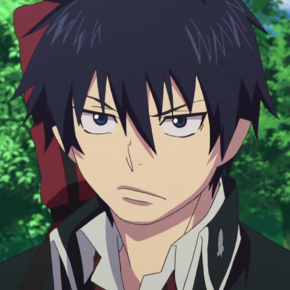
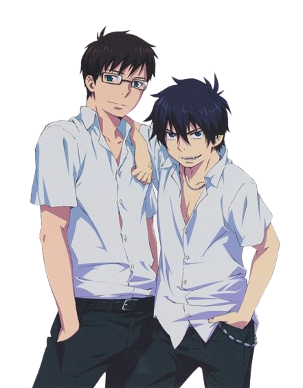
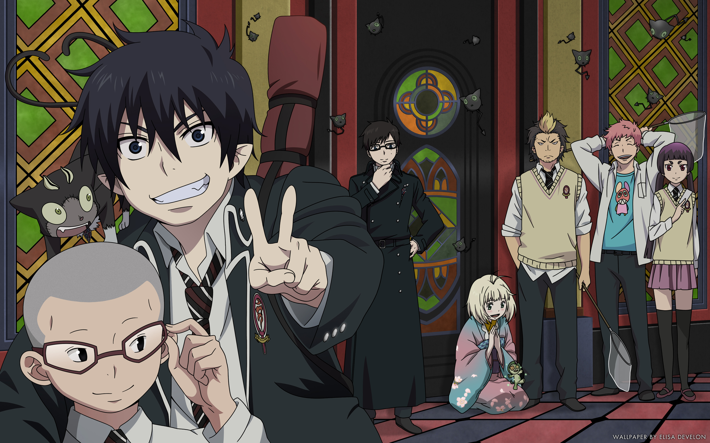
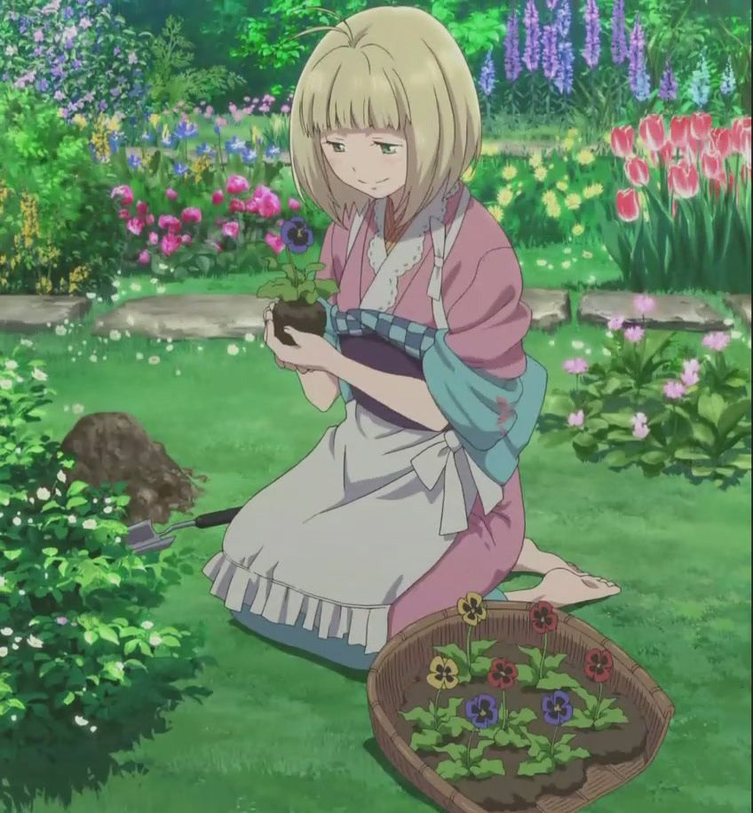
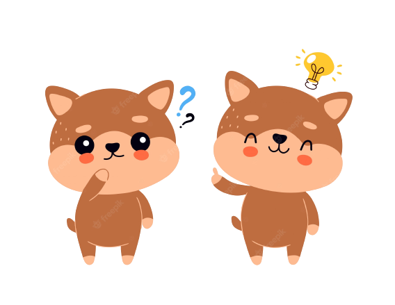
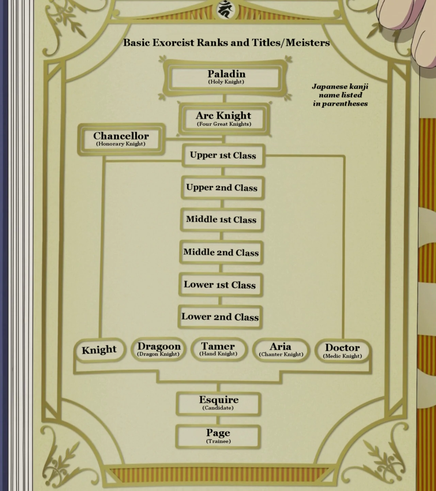
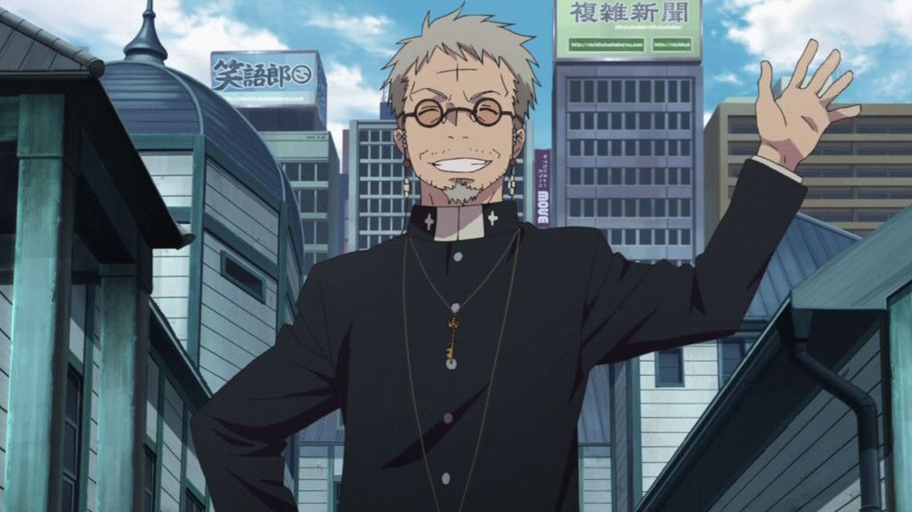

Anime Qcm
Ceci est un QCM sur Blue Exorcist !
Connaissez-vous Blue Exorcist sur le bout des doigts ?
A vous de jouer pour avoir 10/10 :D .
Pour n'avoir aucun spoil, vous n'aurez pas les réponses a la fin du quizz.
Commencez le test maintenant !

Comment s'appelle le personnage principal ?
Rin Okumura
Shiro Fujimoto
Shiemi Moriyama
Shiro Moriyama
Comment s'appelle son frère ?
Shiro
Yukio
Méphisto
il en a pas

Qui estr l'aîné des 2 frères ?
Il en a pas
Yukio
Rin
Ils ont le meme age

Qui est le professeur de la classe de Rin ?
Shiemi
Méphisto
Yamanaka
Yukio
Dans quel corps se trouve Satan ?
Le corps de Rin
Le corps de Yukio
Le corps de Méphisto
Le corps du père Fujimoto

Qui est Shiemi ?
La fille de la gérante d'un magasin
Une démone
Un esprit vengeur de la nature
Une simple humaine

Est-ce que Rin a un animal de compagnie ?
Oui, un petit singe
Oui, un ours en peluche magique
Oui, un chat qui se transforme en monstre
Non
Qui est l'auteur de Blue Exorcist ?
Tite Kubo
Kazue Kato
Jun Mochizuki
Tite Kato

Les Paladins se battent avec ...
Des pistolets
Des incantations
De la magie
Un sabre

Shirô est ...
Le père adoptif de Shiemi
Un ancien ami d'Amaimon
L'ancien Saint Paladin
Le petit-copain de Shura